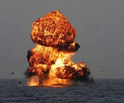
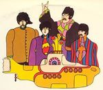

Guerra de las Malvinas
 De: La Frikipedia, la enciclopedia extremadamente seria.
De: La Frikipedia, la enciclopedia extremadamente seria.
| De la serie conflictos armados:
|
| Guerra de las Falklands
|
| 
|
| El ARA General Belgrano momento después de ser impactado
|
|
| Lugar y fecha
|
Islas Malvinas, 1982 - 1982 (no fue muy larga)
|
| Bandos
|
 Argentina Argentina
|
 Reino Unido Reino Unido
 Chile Chile
|
| Fuerzas
|
Jugadores de fútbol
|
Piratas y corsarios
|
| Comandantes
|
Maradona
|
La dama de hierro
Condorito
|
| Armas
|
Bomba de Mate
|
Submarino Amarillo
Apoyo moral
|
| Bajas
|
Soldados 10.001
muertos: 649
heridos: 1.118
|
Soldados 10.700
muertos: 258
heridos: 777
|
| Resultado
|
Perdieron los sudacas
|
La Guerra de las Falklands fue el conflicto en el cual los argentinos intentaron conquistar las Islas Falklands, propiedad del Reino Hundido, con el objetivo de instalar allí un nuevo centro de detención de subversivos, ya que la ESMA no daba abasto con tanto zurdito.
Comienzo
En el 82', los argentinos estaban aburridos con la dictadura militar, los montoneros, etc y se les ocurrió intentar recuperar las islas, así que mandaron un montón de barcos, soldados, ametralladoras, aviones y todo tipo de cosas que sirvieran para matar de forma lenta y dolorosa a cualquier ser, pero los ingleses no se asustaron y mandaron más barcos, soldados, ametralladoras y aviones.
Armamento
Argentina
- Tierra: 10.000 muchachos de 20 años, un par de rifles y varios morteros con lanzacohetes.
- Agua: 50 barcos megasupergrosos.
- Aire: 216 aviones de los y 5 misiles exocet.pero con eso igual hacian mierda a los barquitos de los britagaycos
Reino Unido
- Tierra: 10.700 soldados elite con un Ak-47 y 6 granadas de mano cada uno .
- Agua: 111 barcos armados hasta los dientes con misiles y radares de ultima generacion.
- Aire: 117 aviones recien llegados de gringolandia con misiles y todo.
Aliados
Argentina y el Reino hundido contaron con muchos aliados, Especialmente los Argentinos contaron de todo y los Ingleses con solo 3 putos aliados. Esto es raro debido a que Inglaterra tiene muchos aliados. Pero no es raro que Argentina tenga muchos debido al gran miedo de perder Ahora veremos cuales eran los de cada uno y sus funciones.
Argentina
- Perú: Los nigga nigga apoyaron a Argentina vendiéndole
Palomas que cagaban encima de los ingleses, claro ya comidas Aviones Mirage y algunas municiones y armas que ni funcionaban. Y Argentina le pagará el apoyo traicionando a los Comepalomas y vendiéndole armas a Ecuador en la guerra del Cepa o como se llame no se quienes son peores los shileans o los Argentinos.
- URSS: Claro, al ver que tal país ayudaba a los Ingleses Estos Comunistas decidieron apoyar a Argentina. Le dio información de posiciones a través de radares
y colaboró con el hundimiento del Belgrano (Ver más adelante).
- Libia: Seguro que no me vas a creer una mierda de este, pero le donó bombas a la Argentina. Misiles, morteros, minas
No de las putas, minas explosivas, etc. Algo raro ya que el siguiente país también apoyó a Argentina y este país y este que diré son enemigos.
- Israel: Argentina e Israel fueron aliados indiscutibles. Pero, como Gringolandia apoyaba a Los piratas Israel no puedo hacer "Público" su apoyo a Argentina, por lo que
no le vendió armas SECRETAMENTE. Los judíos están tristes de haber traicionado a los gringos, pero esta bien porque los gringos no le daban ni bolilla. Argentina le pagará el apoyo volando su embajada 10 años después y volando su AMIA 12 años después.
Inglaterra
- Shile: En agradecimiento al general José de San Martín por haberlos
conquistado liberado, Shile apoyó en todo sentido a Inglaterra. Al gobierno de Pinocho Pinochet no le importó una mierda que Argentina pierda y realizó una fiesta con celebridades británicas, Shilenas y Bolivianas.
- Gringolandia: No podía faltar. Mientras estaba activado el TIAR (Tratado de Idiotez Americano y Racista) A Estados hundidos no le importó nada, y apoyó a Inglaterra dándole de todo. Hasta se puede ver en las caricaturas el amor de los Gringos por Inglaterra, Como podemos ver en Phineas y Ferb o en Los simpsons
Putos gringos siempre apoyando a Inglaterra
- Francia: Bueno, que esperabas, estuvieron juntos en la primera y segunda guerra mundial. Si bien Francia le vendió al principio misiles Exocet a Argentina,
traicionó a Inglaterra Inglaterra le dijo que no le vendiera más. Los Ingleses consideran a los franceses como unos traidores héroes. Rato después del comienzo de la guerra, no se supo más nada de la colaboración de Francia en la guerra, por lo que podemos decir que se rindió (Que novedad!!!!).
Combates aéreos

Pucara argentino listo para el combate.
Durante la guerra se dieron espectaculares combates aéreos en los cules los pilotos argentinos demostraron su astucia y valor contra los avanzados británicos.
A continuación se lista algunos de los aviones argentinos y británicos:
Argentina
- Douglas A-4 Skyhawk
- Mirage III
- IAI M-5 Dagger
- BMK-62 Canberra
- FMA IA-58 Pucará:MADE IN ARGENTINA, GUACHO!!!!!
Reino Unido
- Sea Harrier
- Hawker Siddeley Harrier
- unos shilenos por ahi
 La tripulacion después de hundir al Belgrano.
Incidente con el Belgrano
Este incidente sucedió cuando el barco argentino ARA General Belgrano cruzaba por ahí y un submarino inglés tripulado por una tripulación (valga la redundancia) común le lanzó suficientes torpedos como para hundir el Titanic 4576 veces, esto le importó una carajo a los ingleses pero los argentinos hartos de tantas derrotas humillantes no se hicieron esperar y le hincharon la pelotas a Margareta Tatcher de que fue un crimen de guerra y que debe dar una disculpa, obiamente Margaret se pasó la disculpa por el culo y todavía no se le han desinchado la pelotas de tanto jodérselas eso explica su cara.
Fin de la guerra
Los argentinos no resistían más, la Argentina estaba muy pobre además los ingleses ya habian desembarcado en las islas y casi la habían tomado por completo. Los argentina dieron su último esfuerzo defendiéndose, pero no pudieron aguantar y firmaron un pacto territorial y al año la dictadura argentina terminó aunque eso ya es otra historia, la cual algún día editaré.

Soldados argentinos defendiéndose hasta el final.
Véase también
Autor(es):
- Fordus
- Cerberus
- Gñapero Solitario
- Wolfen98
- Generibot
- Marcos ans
- Darth Dominus
- Xdxdxdxdxdxdxdxdxdx
- Personitafrikipedista
Frikipedia 2005-2016, Licencia
GFDL 1.2 - Extraído por FrikiLeaks